어린이 동화
나는 가지 않았다
에스더가 들려주는, 와스디 왕비가 왕관의 부름을 거절한 이야기
넓은 궁
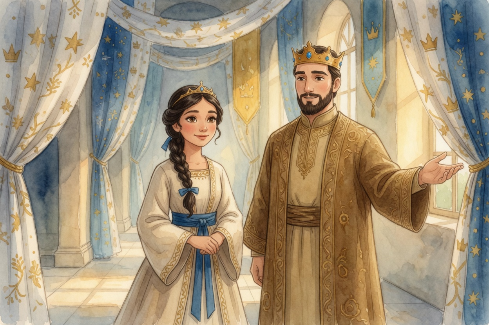
나는 에스더야. 지금은 수산 궁의 왕비지.
그림 속 왕비, 나인 줄 알았지? 근데 아니야. 와스디 왕비야. 내가 오기 전 이 궁의 왕비.
그 무렵 나는 도성 수산의 모르드개 집에서 자라고 있었어. 모르드개는 나를 딸처럼 키워 준 사촌 오빠야. 궁 안의 일은 나중에 궁에 와서 들었어.
그림 속 남자는 이 나라의 왕 아하수에로야. 손바닥 쫙 편 거 보이지? 이 왕은 뭘 보여 주는 게 거의 취미야. 그때도 왕은 틈만 나면 이렇게 말했다더라.
“봐, 이게 다 내 나라야. 넓지? 멋지지?”
요즘 말로 하면, 나라 규모로 플렉스한 거지. 보여 주고 싶은 왕의 그 마음이, 곧 아주 긴 잔치로 이어졌어.
긴 잔치
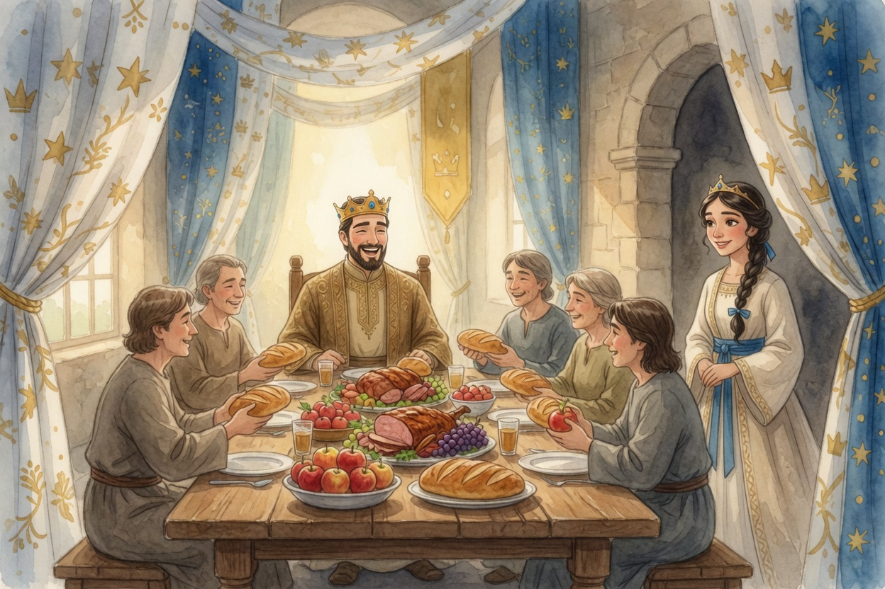
아하수에로 왕은 왕위에 오른 지 셋째 해에 큰 잔치를 열었어. 나라 곳곳의 지방관과 신하들, 바사와 메대의 장수와 귀족들이 도성 수산으로 모였지. 참, 바사는 페르시아야.
잔치가 며칠이었는지 알아? 백팔십 일. 꼬박 반년이야. 나 같으면 사흘째에 배탈이 났을 거야.
그동안 왕은 날마다 나라의 보물을 펼쳐 보였고, 상에서는 웃음이 끊이지 않았어.
와스디 왕비는 문가에 서서 그 웃음소리를 들었대.
성 안의 일곱 날
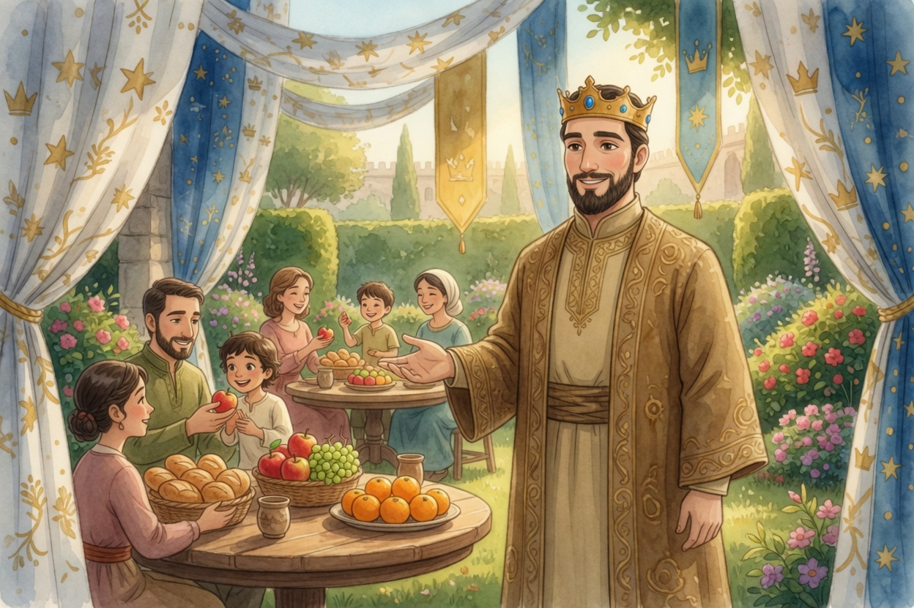
백팔십 일 잔치가 끝나자, 아하수에로 왕은 도성 수산 사람들까지 궁의 정원으로 불렀어. 이번엔 일주일짜리 앙코르 잔치였지.
상마다 엄마 아빠 아이가 같이 둘러앉았어. 왕은 손님들한테 손을 펴 보이며 이렇게 말했대.
“먹고 싶은 만큼 먹어. 마실 것도 원하는 만큼만. 억지로 권하는 사람은 없게 할게.”
억지로 권하지 않기. 이거, 이따 다시 나와.
정원이 그렇게 활짝 열렸는데도, 여자들끼리 마음 놓고 앉을 자리는 따로 없었어.
여자들의 상
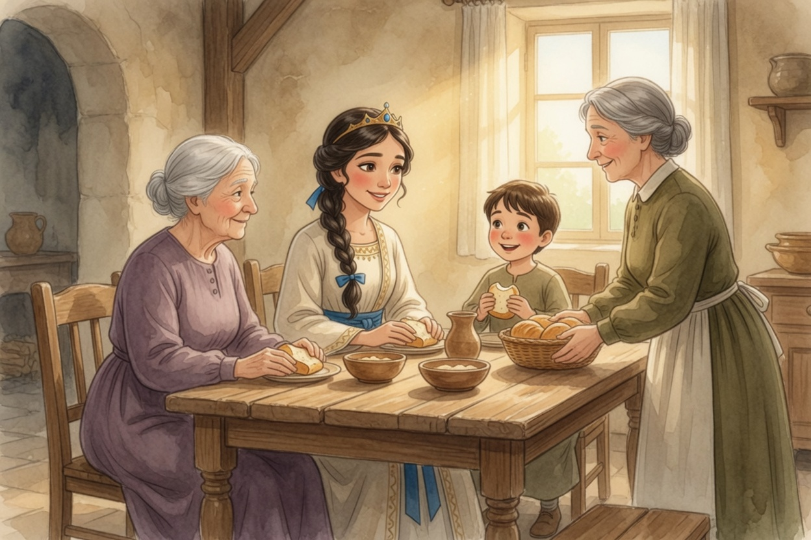
여자들끼리 앉을 자리가 없다는 걸, 와스디 왕비는 그냥 넘기지 않았어. 궁 안쪽의 소박한 방에 여자들을 위한 상을 따로 차렸지.
할머니도, 빵을 쥔 사내아이도 왔어. 앞치마 두른 시녀는 빵 바구니를 들고 다녔고. 와스디 왕비는 둘러앉은 얼굴들을 보며 이렇게 말했대.
“오늘은 우리가 앉는 날이야. 누구한테 보여 주려고 모인 거 아니야.”
왕관의 부름
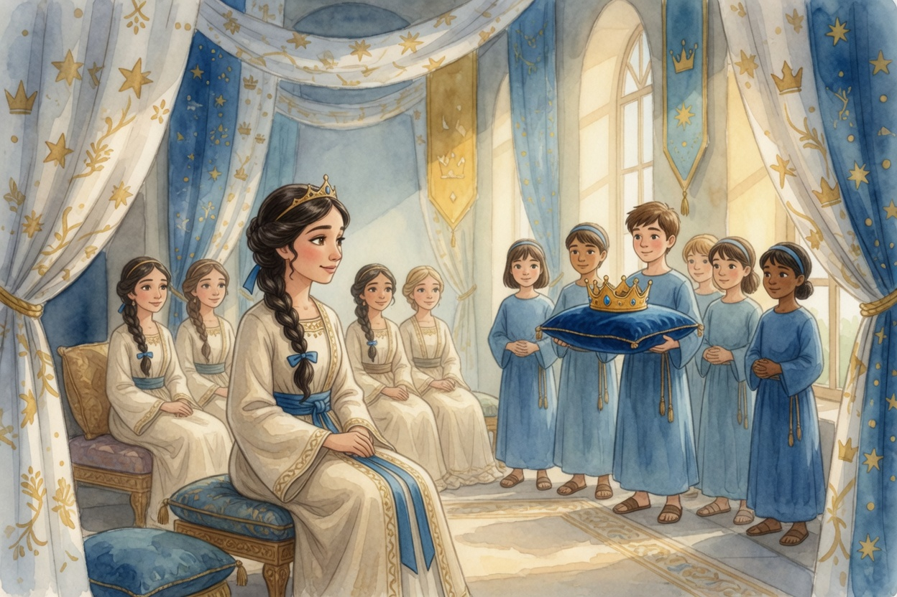
여자들의 잔치가 한창일 때, 정원 잔치는 어느덧 칠 일째였어. 기분이 한껏 들뜬 아하수에로 왕이, 내시 일곱을 와스디 왕비에게 보냈어.
내시들은 어린 시종들을 앞세우고 왔어. 한 아이가 방석 위에 왕관을 받쳐 들고서. 내시 하나가 왕의 말을 전했대.
“왕이 불러. 왕관 쓰고 정원으로 나오래. 손님들한테 왕비가 얼마나 아름다운지 보여 주고 싶다고.”
궁도 보여 줬고, 보물도 보여 줬고, 정원도 보여 줬어. 이제 남은 자랑은 딱 하나. 왕비였던 거야.
손님들한테는 억지로 권하지 말라더니, 왕비는 불러다 세우겠다고? 와, 이건 좀 아니지 않아?
와스디 왕비가 지금 나가면, 여기 앉은 여자들도 언젠가 차례로 불려 나갈지도 몰랐어. 그러니까 대답은 지금, 이 방에서 해야 했어.
가지 않을게
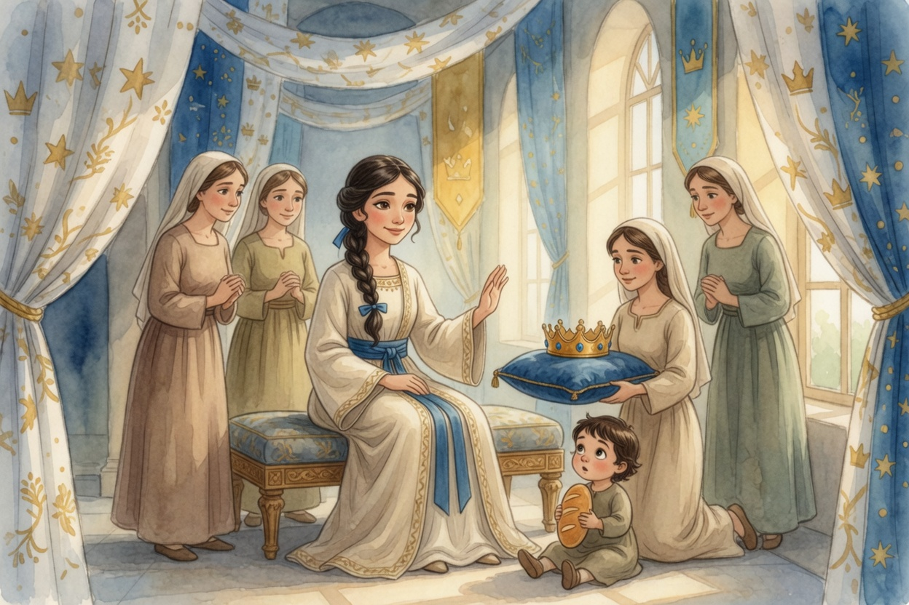
시종 아이가 들고 온 왕관 방석은, 곁에 있던 한 여자가 받아 들었어. 그러고는 무릎을 꿇고 와스디 왕비 앞에 내밀었어.
방 안이 조용해지더래. 빵을 쥔 아기까지 눈이 동그래졌다나 봐.
와스디 왕비는 한참 왕관을 보다가, 웃으며 손바닥을 들고 이렇게 말했대.
“가지 않을게. 왕비 자리를 잃어도 좋아. 나를 구경거리로 부르는 자리에는 안 가.”
그 한마디로 왕관을 잃는다는 걸 뻔히 알면서도, 와스디 왕비는 든 손을 내리지 않았대.
목소리는 작았는데, 문밖까지 또렷하게 들리더래.
나였으면 그렇게 말할 수 있었을까?
조용해진 정원
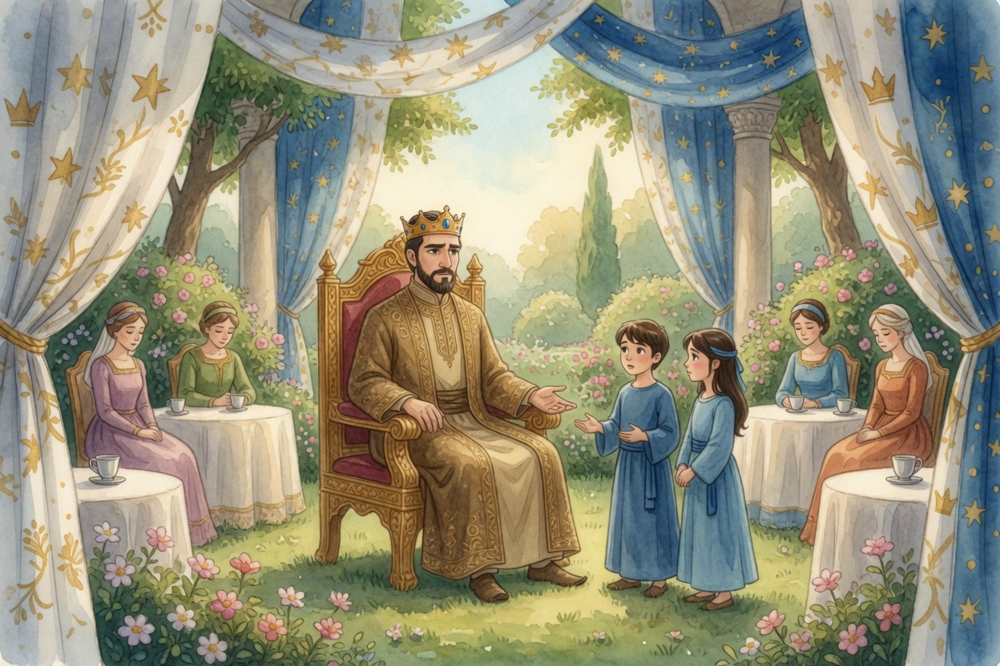
시종 아이 둘이 정원의 아하수에로 왕 앞으로 돌아왔어. 여자들의 방 얘기도, 이 정원 얘기도, 그날 왕관을 들었던 아이한테 들은 거야. 지금은 나보다 키가 커.
심부름 간 사람들은 와스디 왕비의 팔을 붙잡지 않았어. 왕명이라며 억지로 끌고 갈 수도 있었는데. 그러지 않은 게 첫 번째 도움이었어.
아하수에로 왕은 소리를 지르지 않았어. 서운한 얼굴로 가만히 있더래. 근데 조용한 화가 더 무서운 거, 다들 알지? 왕이 시종 아이들한테 낮게 되물었대.
“안 온다고? 손님들이 다 보고 있는데?”
식탁의 손님들은 찻잔만 내려다봤어. 왕한테는 거절보다, 그걸 모두가 들었다는 게 더 아팠던 거야.
법을 아는 어른들
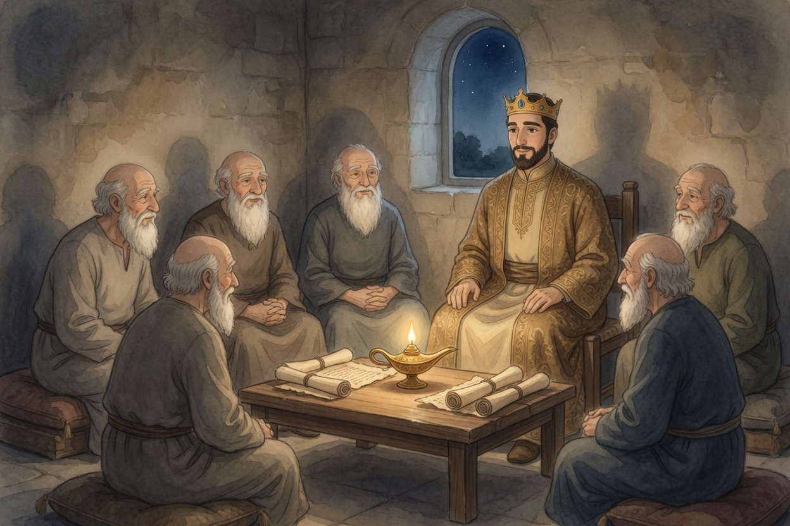
그날 밤, 아하수에로 왕은 등잔 하나 켠 방으로 바사와 메대의 일곱 지방관을 불렀어. 법을 훤히 아는 어른들이었지.
이 방에서 오간 말은 문 앞에 서 있던 내시 하르보나한테 들었어. 문이 좀 얇았나 봐.
아하수에로 왕이 지방관들을 둘러보며 물었대.
“와스디 왕비가 내 부름에 안 왔어. 법대로 하면 이걸 어떻게 해야 해?”
그때 므무간이라는 지방관이 먼저 일어났어.
걱정이 커지다
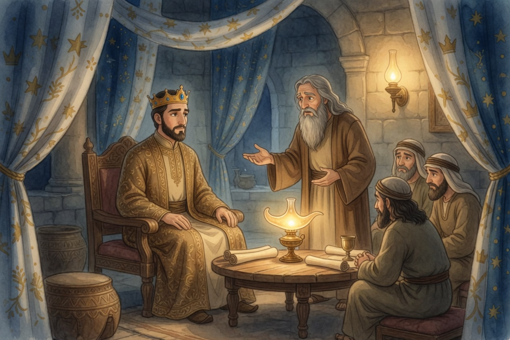
므무간은 걱정 가득한 얼굴로 두 손을 펴 들었어. 왕비가 미워서가 아니라, 이 일이 번질까 봐 겁이 났던 거지. 므무간이 왕에게 이렇게 말했다더라.
“왕비가 거절했다는 소문이 퍼지면, 나라 안의 아내들이 다 남편 말을 가볍게 여길 거야.”
므무간은 한술 더 떠서 말을 이었대.
“그러니 와스디 왕비는 이제 왕 앞에 못 오게 하자. 왕비 자리는 더 나은 사람한테 주고. 이걸 바사와 메대의 법에 적어서, 아무도 못 바꾸게 하자.”
오라고 할 때 안 왔다고, 이제는 아예 오지도 못하게 하자는 거야. 셈이 좀 이상하지 않아?
비워진 의자
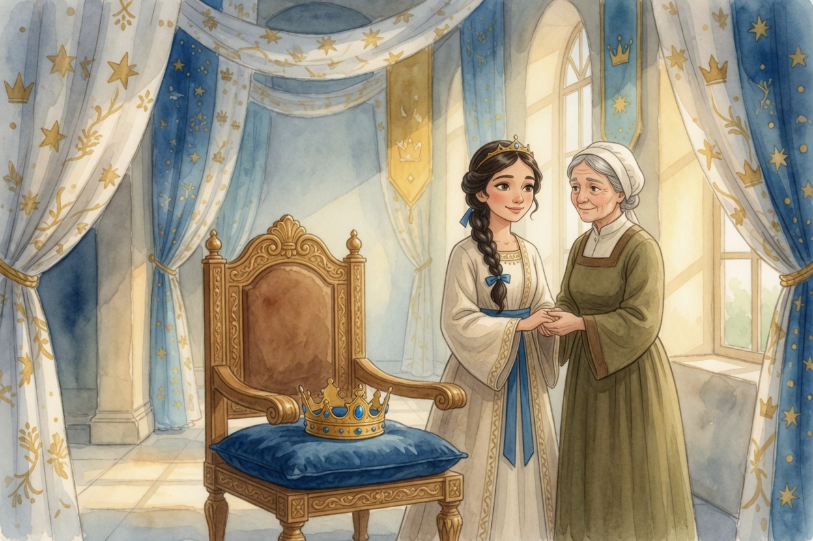
아하수에로 왕은 므무간의 말에 고개를 끄덕였어. 생각보다 빨리. 아니, 너무 빨리.
왕은 손님들 앞에서 구겨진 체면을 얼른 다림질하고 싶었던 거지.
그렇게 와스디 왕비의 의자가 비었어. 큰 왕관만 방석 위에 남았지. 머리의 작은 관은 아직 그대로였고.
그때 누군가 와스디 왕비의 손을 잡았어. 여자들의 상에서 빵 바구니를 들던 그 시녀야. 시녀는 그 손을 꼭 쥐고 속삭였대.
“그 소식, 혼자 듣지 마. 내가 옆에 있을게.”
그 손이 두 번째 도움이었어. 자리는 잃었어도, 곁은 남은 거야.
여러 말로 간 편지
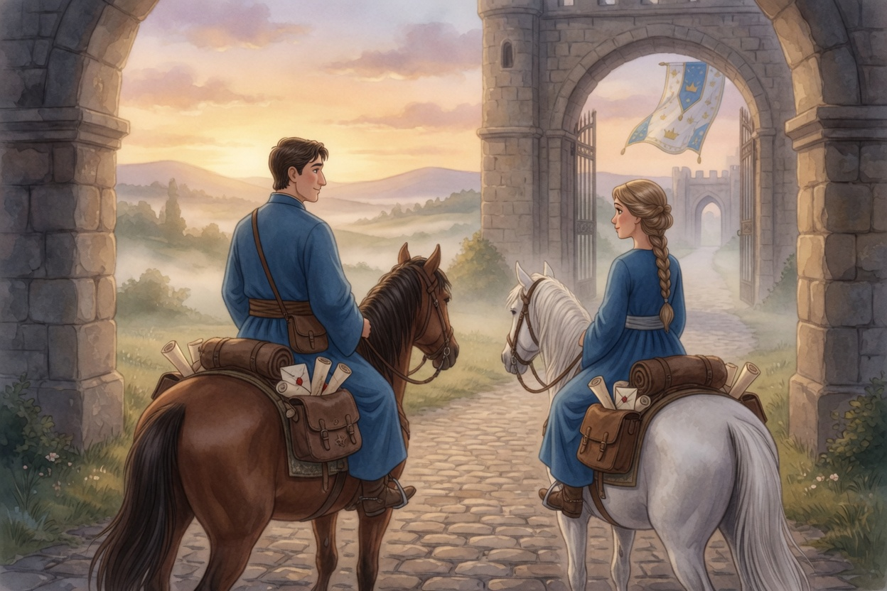
며칠 뒤 새벽, 편지를 실은 말들이 도성 수산의 성문을 나섰어. 편지는 지방마다 쓰는 글자와 언어로 적혀 있었어. 말 등에 여러 나라 말이 실려 간 셈이지.
나는 말발굽 소리에 잠이 깼어. 곧 담 너머에서 이웃 사람들이 수군거렸어.
“와스디 왕비는 이제 왕 앞에 못 온대. 그 자리엔 다른 사람이 앉게 되나 봐.”
편지 내용은 남편이 자기 집안을 이끌라는 거였어. 게다가 바사와 메대의 법이라서 아무도 못 되돌린대. 왕도 못 되돌려. 왕인데도.
거절은 한마디였는데, 편지는 나라만큼 커져 있었어. 나는 그 크기가 무서웠어.
본 적도 없는 왕비인데, 자꾸 마음이 쓰이더라. 그래서 나는 모르드개 집 마당에서 짧게 기도했어.
“하나님, 와스디 왕비가 이 소식을 혼자 듣지 않게 해 줘. 그 빈자리가 누구한테도 끝이 아니게 해 줘.”
모르드개도 옆에서 그 기도를 들었어.
그래도 나는 나
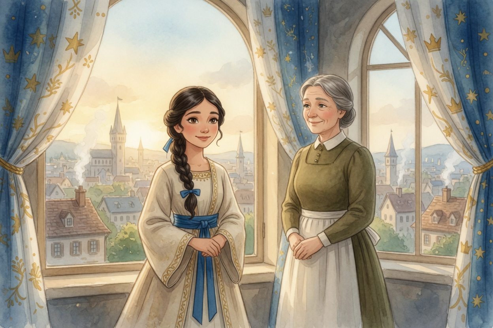
편지가 떠난 그 아침, 와스디 왕비는 시녀와 나란히 창가에 섰대. 머리의 작은 관도 이제 없었다더라.
지금은 내 곁에 있는 그 시녀한테 들은 얘기야. 와스디 왕비가 창가에서 조용히 한마디 했대.
“나는 가지 않았어. 왕관은 잃었지만, 나는 그대로 나야.”
그 얘기를 듣는데, 그 새벽 내 기도가 생각났어. 내가 기도하던 그때, 와스디 왕비 곁엔 벌써 시녀가 있었던 거야. 하나님은 내 기도를, 내가 하기도 전에 듣고 있었나 봐.
몇 해 뒤, 그 빈 의자에 누가 앉았냐고? 지금 이 이야기를 들려주는 나, 에스더야.